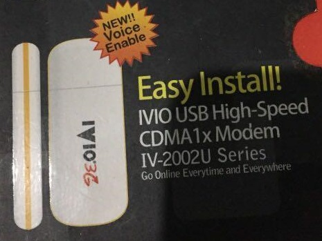
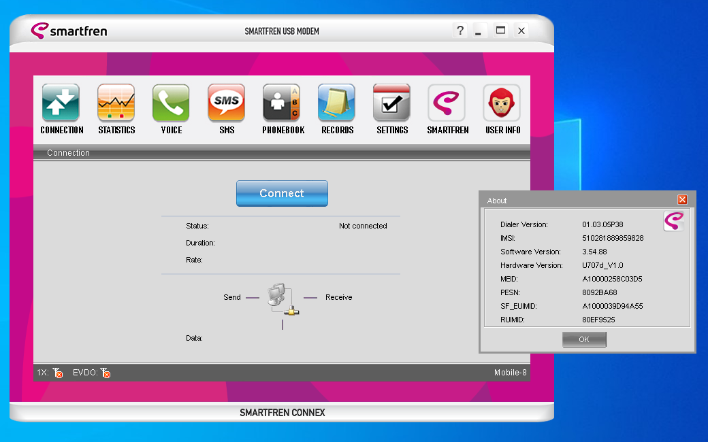

Pengalaman pertama mengenal komputer
itu bermula saat tahun 2006-an ketika saya bermain kerumah tetangga yang tepat sekali berada didepan rumah.
saya melihat ada sebuah mesin yang bisa memunculkan tampilan yang sangat wah seperti televisi
di sinilah awal mulanya mengenal komputer dan saya sangat penasaran apa saja yang bisa dilakukan komputer tersebut
saat itu saya diajak untuk bermain game bersamanya dan rasanya seperti bermain playstation tapi ini menggunakan perangkat yang berbeda yaitu mouse dan keyboard
tahun-tahun berlalu seiring berjalannya waktu pada tahun 2008 komputer pertama bisa ada dirumah berkat kaka saya yang meminta dibelikan untuk kebutuhan sekolah
saya masih ingat betul spek komputernya yaitu intel core duo, dengan casing merk simbada dan osnya windows xp sp3
mulai dari sini saya mempelajari banyak hal tentang komputer
saya mempelajari perangkat apa saja yang ada didalamnya, seperti power supply, hard disk, kabel ATA, CD-ROOM, Motherboard
bagaimana cara menginstall dan menjalankan software, menginstall osnya dan masih banyak lagi
sampai saya ingat betul hanya gara-gara aplikasi modem error, saya selalu install ulang komputernya berulang kali
Modem Pertama dirumah
modem pertama yang dipakai saat itu adalah modem IVIO 3G, yang kartunya menggunakan Operator flexi
paket internetannya murah dan bisa digunakan untuk berselancar internet walau harus bersabar menunggu loadingnya
modem ini rusak karena saya bongkar dan antenanya copot… 😂
berikut gambar modemnya

lanjut Modem Kedua yaitu modem SmartFren 4G, dengan paket yang bisa unlimited namun dibatasi FUP
saya ingat betul saat smp saya sisihkan uang jajan hanya untuk membeli paket internet unlimited ini
sepulang sekolah saya mampir ke konter untuk membeli pulsa, sesampainya dirumah saya langsung membeli paketnya kalau tidak salah harga paketnya 50ribuan untuk 1 bulan
sayapun bisa berinternetan sedikit lancar, saat itu internet ini saya gunakan untuk buka sosial media, dan bermain game lost saga
sampai sekarang modem ini masih ada dan berikut gambarnya
berikut gambar aplikasi modemnya

Penutup
sungguh sangat pengalaman yang sangat mengesankan, ditahun tersebut sudah bisa merasakan komputer adalah hal yang wah sekali menurut saya…